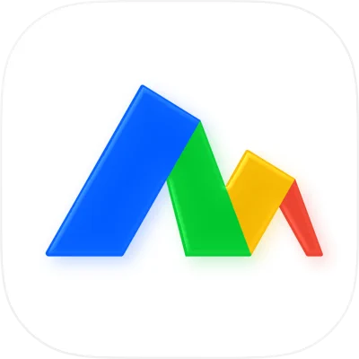
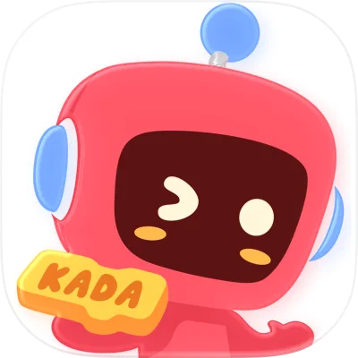

个人总结
希望能打造一款被用户喜爱的 AI 生产力工具，定义 下一代 AI 产品。
-
01
设计工具 + AI 界面生成 主导 Motiff AI 从预研到商业化的完整产品周期，具备 AI 产品 0-1 全链路经验。
-
02
创造者 + 好奇心 + 布道者 对 AI 前沿保持高敏感度，工作流全面 AI 化（Cursor、Claude Code、Google AI Studio 等），在团队内倡导先进 AI 实践。
-
03
技术敏感度与判断力 在 AI 生成 UI 项目中，主导了 3 次技术路线的转向与落地，同时建立了相对完善的数据标注、评测流程和体系。
-
04
用户思维与业务思维 善于通过用户访谈与行业调研，将用户洞察转化为可落地的产品方案。
-
05
强 Ownership 与创业心态 从业期间始终保持在绩效 Top 水平，乐于在不确定性中探索，善于将模糊目标转化为可执行方案并落地。
工作经历

看云软件（猿辅导全资） · Motiff 妙多
AI 产品负责人
Motiff 是一款 AI 驱动的界面设计工具，致力于探索 AI 时代的产品设计新范式。
阶段一：基础能力建设与预研（2022-2023）
- 从教育行业转型进入专业设计工具领域，快速建立行业认知。
- 负责编辑器基础功能产品设计（画布编辑、图层面板、原型动效等）、性能监控体系搭建。
- 主导 AI 生成方向预研，探索 AI 在设计工具中的应用可能性。
阶段二：AI 生成 UI 预研与验证（2023-2024）
⭐ 核心项目
🚀 核心成绩：主导从预研到上线到商业化的完整闭环，3 次技术路线转向均踩准节奏。
- 作为项目 Owner 主导 AI 生成 UI 的完整预研：机会界定、可行性试验、评测基线设定。
- 主导 3 次关键技术转向：
- 第 1 次：验证生图+LoRA 方案、RAG 等方向的局限性，果断放弃。
- 第 2 次：采用「微调 UI 模型 + 指定设计系统」方案快速上线 MVP（2024.06），在当时达到了行业生成 SOTA 水平。
- 第 3 次：在 Claude 3.5 Sonnet V2 发布当天完成评测，推动切换至「代码生成」路线。 - 建立完整的 AI 评测体系：多样化评测集、定期专家评测、bad case 驱动迭代。
阶段三：Motiff AI 2.0 商业化（2024-2025）
⭐ 核心项目
🚀 核心成绩：独立负责妙多 AI 和 Motiff 海外版本的产品规划、迭代与上线，完成商业化验证。
- 完成 Motiff AI 2.0 完整产品方案设计与分阶段上线策略。
- 核心功能：基于代码生成的 UI 生成系统（自研 HTML2Motiff 引擎）；支持 Material/Ant Design/Shadcn 等风格；基于用户设计系统的个性化生成；多模态 Agent 能力。
- 商业化设计：订阅收费模式设计。
- 独立负责 Motiff AI 插件与独立站的产品规划。
- 完成 5+ 场行业分享与品牌活动，建立产品对外影响力。
💡 个人沉淀
- 技术可行性验证：建立了一套从「技术边界探索 → 产品化落地 → 持续迭代」的完整方法论，能够在 AI 技术快速迭代的环境中找到技术与产品的平衡点。
- AI 评测体系：建立多样化评测集、定期专家评测机制，从「保证底线」转向「追求惊喜」的评测思维。
- 敏捷验证：保持对市面上一线新模型的高敏感度和高强度手感，能够第一时间评估新技术对产品的影响并快速决策。
 猿辅导 · 斑马 AI 课
猿辅导 · 斑马 AI 课
产品经理
绩效 A（前 20%）
项目：辅导老师工作台重构
⭐ 核心项目
🚀 核心成绩：主导 2 万+ 老师工作台重构，建立标准化沟通任务机制 → 转化率 14% → 16.5%。
- 将服务周期迭代为「参课-完课-学情-转化-断课」阶段，结合分层策略设计沟通任务推送机制。
- 为管理者提供核心数据看板，聚合用户画像标签信息，支撑精细化运营与差异化服务。
增长与效率迭代
- 用户分层体系：引入预测续报概率模型，设计「S/A/B/C」分层与差异化沟通策略 → 转化率 18% → 21.5%。
- 完课率优化：按完课行为分类，设计针对性催课沟通工具 → 完课率 65% → 69%。
- 目标管理工具：设计「总部下达-管理者设定-老师达成」目标管理路径 → 达成率 +10%，管理者 NPS -10% → 41.3%。

网易 · 有道卡搭
产品经理
绩效 S（前 10%，连续 2 年）
授课模式转型
- 主导「AI 互动课件 + 小班音视频教室 + 助教答疑」双师模式的产品方案设计与落地，替代原大班直播模式。
- 完课率 27% → 58%（+2 倍），转化率 3.5% → 10.8%（+3 倍），课时单价提升 30%+，助教人效 60 → 150 人（+2.5 倍）。
项目：课程销售探索
⭐ 核心项目
🚀 核心成绩：从 0 搭建 6 人全职销售团队并验证课程销售模式，体验课转化率 5% → 16%（+3 倍）。
- 前期通过轮岗沉淀销售服务经验，建立「投放-触达-跟课-转化-关单-数据总结」的全流程分析机制。
- 沉淀用户分级标准与销售 SOP，组织 10 场主题培训，制定上岗能力考察标准，团队后续顺利承接至运营。